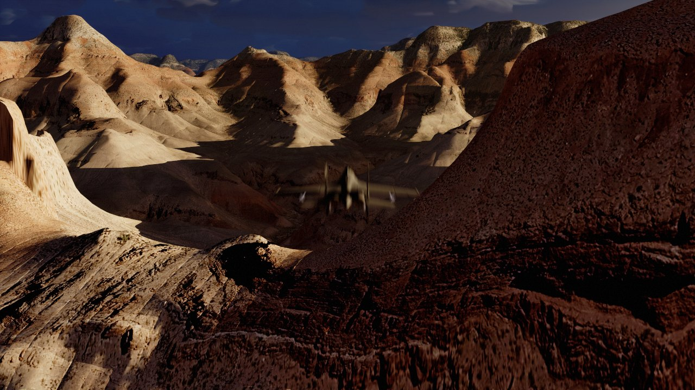
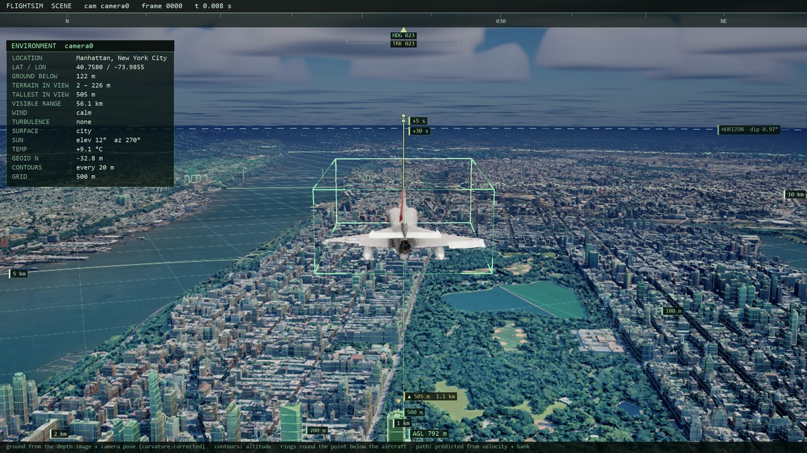

Dear Professor Backus and Dr. Bhattacharya,
I am pleased to submit the final deliverable for the FlightSim project.
FlightSim is a research-grade flight simulation and synthetic-data system. A user describes a flight in plain English. The system turns that description into a validated, reproducible scenario, flies it with the JSBSim flight-dynamics model, and renders it in Unreal Engine 5.7 over real-world terrain. Each run produces frames or a video clip together with an annotated dataset (COCO, KITTI, YOLO, VOC and WebDataset). For every frame it also produces 2-D and 3-D bounding boxes, analysis pictures and JSON data.
1. Source repository (public, branch phase-3-completed)
https://github.com/DhruvaValluru/flightsim/tree/phase-3-completed
2. Startup Guide (attached)
Covers installation, the first start, using the web app, and how to get each run's frames, analysis pictures and JSON files.
3. Preview renders (attached)
Six frames rendered by the system: a J-11A over the Matterhorn and over the desert, an A320 over New York, an A-4E over the Alps, a 747 in a thunderstorm and a Cessna 172 near a tornado.
4. Analysis frames and JSON data (attached)
For every frame, the system draws three analysis pictures from the flight model's state: Plain (the 3-D bounding box), Detailed (forces, airflow and flight-state panels) and Scene (terrain contours, flight path and environment). Each picture is backed by per-frame JSON data, and each clip has a physics.csv; one sample JSON is attached.





Thank you both for your guidance and support throughout this project. I would be glad to give a live demonstration or answer any questions at your convenience.
Best regards,
Dhruva Valluru
FlightSim Project